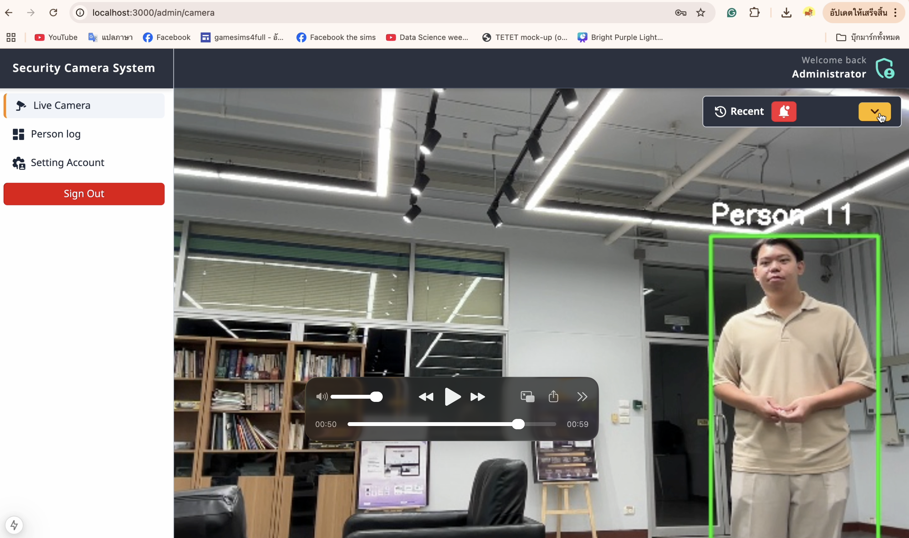
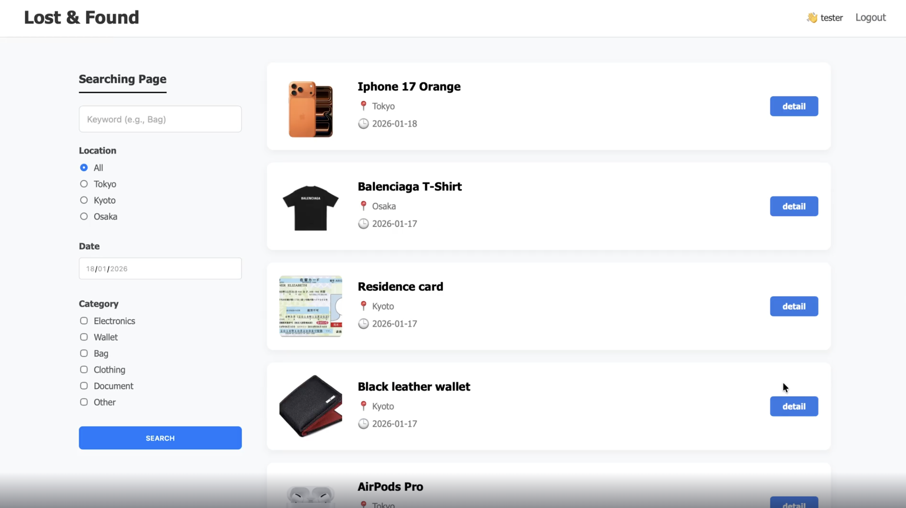
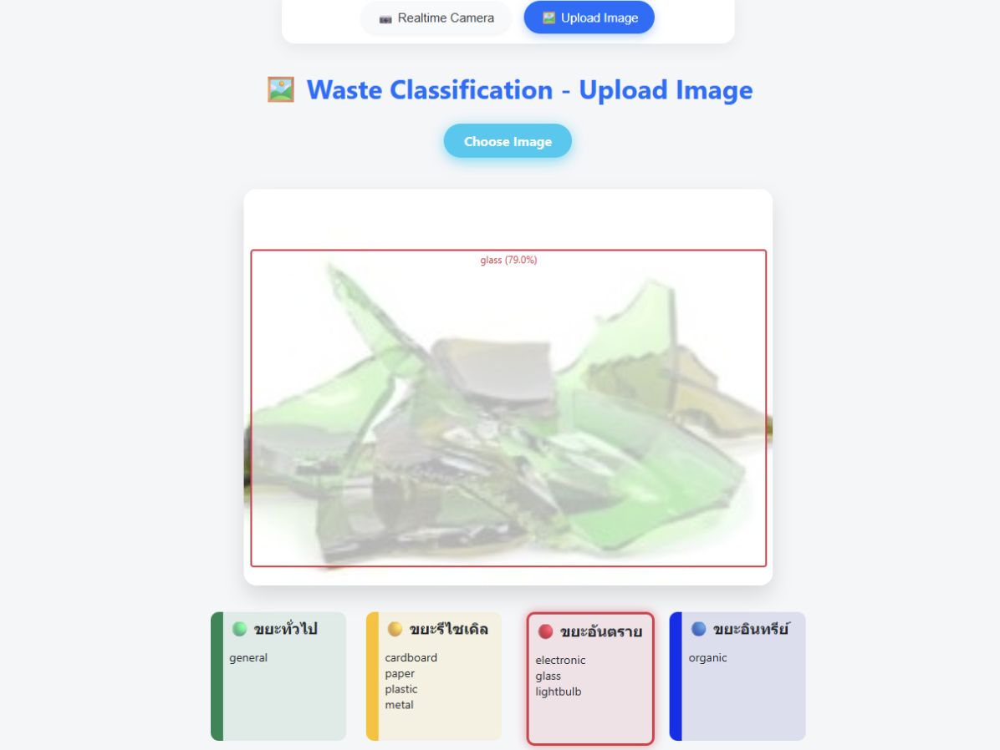
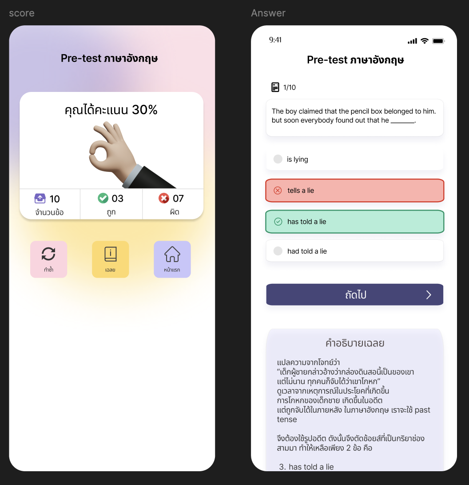

Education
B.Sc. in Applied Computer Science
KMUTT · Second-class
honors
✨ SOFTWARE QUALITY · SYSTEM THINKING
A Computer Science graduate with hands-on software testing experience and an interest in Business Analysis. I enjoy understanding how a system should work, checking what can go wrong, and turning findings into clear requirements and testable outcomes.
Thailand · Open to entry-level QA / BA / System Analyst opportunities
A LITTLE ABOUT ME
I graduated in Applied Computer Science from King Mongkut’s University of Technology Thonburi and spent a year as an exchange student at Shibaura Institute of Technology in Japan through the Sato Yo International Scholarship Foundation.
During a five-month Software Tester internship, I worked with test cases, Jira defects, retesting, and UAT-related activities. That experience made me interested not only in whether a feature works, but also in why it is needed and how its requirements should be communicated.
I’m now building practical examples that connect QA experience with Business Analysis and System Analysis.
B.Sc. in Applied Computer Science
KMUTT · Second-class
honors
Exchange student at Shibaura Institute of Technology, Japan · 2025–2026
5-month Software Tester internship at Ocean Life Insurance
Requirements, user flows, acceptance criteria, and testable outcomes
🧰 MY TOOLKIT
Skills are grouped by how I use them. BA artifacts listed here are portfolio practice based on an academic project, not client-approved deliverables.
Document test scenarios, report defects, retest fixes, and communicate findings.
Practice automating repeatable web flows and checking expected outcomes.
Validate API responses and build foundational database-testing skills.
Portfolio practice: translate an academic system into requirements and traceable test scenarios.
💻 SELECTED WORK
I want each project to show the problem, the decisions I made, and evidence of the work—not just a list of technologies.

Academic prototype using YOLO for face detection, InsightFace for embeddings, and KD-Tree / cosine similarity for matching. I’m extending this project with BA artifacts to show how requirements connect to user flows and test cases.

A responsive PHP website project for reporting and finding lost items. Relevant areas include form behaviour, navigation, and regression checks.

A waste-classification project using a YOLO model. My portfolio description should be updated with the exact implementation and testing tasks I personally completed.
A growing collection of runnable automation examples and documented test scenarios. Add repository links and execution evidence as each exercise is verified.

Reviewed a mobile app UX/UI design and created manual test cases to check layout consistency, navigation flow, and interface behaviour across screen sizes.
📝 FEATURED CASE STUDY
See how I structure a problem, identify users, draft requirements, map a flow, and connect requirements to test cases. This is a learning case study based on my academic project, not a real-client engagement.
View BA case study💌 LET’S CONNECT
I’m interested in entry-level opportunities in Software QA / Testing, Business Analysis, and System Analysis.